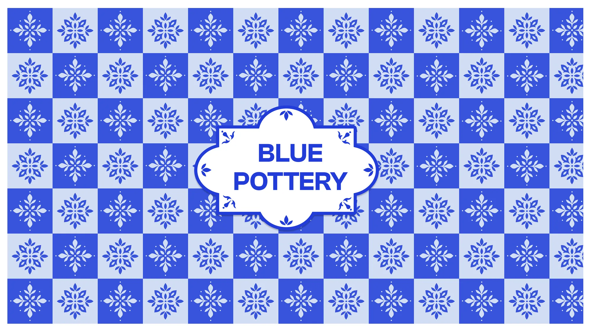

Blue Pottery Products
Beautiful and practical blue pottery for everyday use - motifs, patterns and products inspired by Jaipur's blue pottery tradition and its architecture.

The Problem
Blue pottery is treated as a delicate showpiece.
What I Did
Motifs, patterns and a six-colour palette turned into everyday objects: jewelry box, table clocks, coffee mugs, gifting boxes.
Takeaway
Beautiful and practical can be the same thing.
Impact
A collection of functional designs that prove art tradition can thrive in everyday use.
Bringing blue pottery to everyday life.
Blue pottery is a beautiful tradition from Jaipur, but it's often kept as a precious showpiece.
This project explores what happens when you take the patterns and motifs of blue pottery tradition and apply them to everyday objects - turning something precious into something practical without losing its beauty.
Design process
The collection started with research into traditional blue pottery patterns from Jaipur. I developed a six-color palette and a set of motifs, then designed practical products that could showcase these patterns: jewelry boxes, table clocks, coffee mugs, and gifting boxes.
Product collection
Key takeaway
This project proved that beautiful and practical don't have to be separate. Traditional art forms can live in everyday use, and sometimes the most valuable designs are the ones we actually use, not just display.